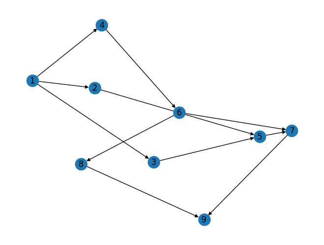

#Membuat DiGraph
import networkx as nx
import matplotlib.pyplot as plt
membuat objek Graph#
G = nx.DiGraph()
menambahkan node#
G.add_nodes_from([1,2,3,4,5,6,7,8,9])
menambahkan edge#
G.add_edge(1,2)
G.add_edge(1,3)
G.add_edge(1,4)
G.add_edge(2,5)
G.add_edge(3,5)
G.add_edge(4,6)
G.add_edge(5,7)
G.add_edge(6,7)
G.add_edge(6,8)
G.add_edge(7,9)
G.add_edge(8,9)
menampilkan graph#
nx.draw(G, with_labels=True)
plt.show()

menghitung pagerank#
pr = nx.pagerank(G, alpha=0.85)
menampilkan pagerank#
print(pr)
{1: 0.04326446332550159, 2: 0.05552292377930404, 3: 0.05552292377930404, 4: 0.05552292377930404, 5: 0.13765482567100895, 6: 0.09045964449825525, 7: 0.19871713018312323, 8: 0.08171007296930738, 9: 0.2816250920148913}
#Implementasi algoritma PageRank dengan menggunakan iterasi secara manual menggunakan library NetworkX
def pagerank_iter(G, alpha=0.85, max_iter=100, tol=1.0e-6):
pr = {node: 1/G.number_of_nodes() for node in G.nodes()}
print(f"Iteration 0: {pr}")
for i in range(max_iter):
old_pr = pr.copy()
diff = 0
for node in G.nodes():
incoming_edges = list(G.in_edges(node))
if len(incoming_edges) == 0:
pr[node] = 0
else:
incoming_weights = sum([old_pr[edge[0]] / len(G.out_edges(edge[0])) for edge in incoming_edges])
pr[node] = (1 - alpha) / G.number_of_nodes() + alpha * incoming_weights
diff += abs(pr[node] - old_pr[node])
print(f"Iteration {i+1}: {pr}")
if diff < tol:
break
return pr
pagerank_iter(G, alpha=0.85, max_iter=100)
Iteration 0: {1: 0.1111111111111111, 2: 0.1111111111111111, 3: 0.1111111111111111, 4: 0.1111111111111111, 5: 0.1111111111111111, 6: 0.1111111111111111, 7: 0.1111111111111111, 8: 0.1111111111111111, 9: 0.1111111111111111}
Iteration 1: {1: 0, 2: 0.04814814814814815, 3: 0.04814814814814815, 4: 0.04814814814814815, 5: 0.20555555555555555, 6: 0.1111111111111111, 7: 0.15833333333333333, 8: 0.06388888888888888, 9: 0.20555555555555555}
Iteration 2: {1: 0, 2: 0.01666666666666667, 3: 0.01666666666666667, 4: 0.01666666666666667, 5: 0.09851851851851853, 6: 0.0575925925925926, 7: 0.23861111111111108, 8: 0.06388888888888888, 9: 0.20555555555555555}
Iteration 3: {1: 0, 2: 0.01666666666666667, 3: 0.01666666666666667, 4: 0.01666666666666667, 5: 0.04500000000000001, 6: 0.030833333333333338, 7: 0.12488425925925928, 8: 0.041143518518518524, 9: 0.27379166666666666}
Iteration 4: {1: 0, 2: 0.01666666666666667, 3: 0.01666666666666667, 4: 0.01666666666666667, 5: 0.04500000000000001, 6: 0.030833333333333338, 7: 0.06802083333333335, 8: 0.029770833333333337, 9: 0.1577902777777778}
Iteration 5: {1: 0, 2: 0.01666666666666667, 3: 0.01666666666666667, 4: 0.01666666666666667, 5: 0.04500000000000001, 6: 0.030833333333333338, 7: 0.06802083333333335, 8: 0.029770833333333337, 9: 0.09978958333333335}
Iteration 6: {1: 0, 2: 0.01666666666666667, 3: 0.01666666666666667, 4: 0.01666666666666667, 5: 0.04500000000000001, 6: 0.030833333333333338, 7: 0.06802083333333335, 8: 0.029770833333333337, 9: 0.09978958333333335}
{1: 0,
2: 0.01666666666666667,
3: 0.01666666666666667,
4: 0.01666666666666667,
5: 0.04500000000000001,
6: 0.030833333333333338,
7: 0.06802083333333335,
8: 0.029770833333333337,
9: 0.09978958333333335}